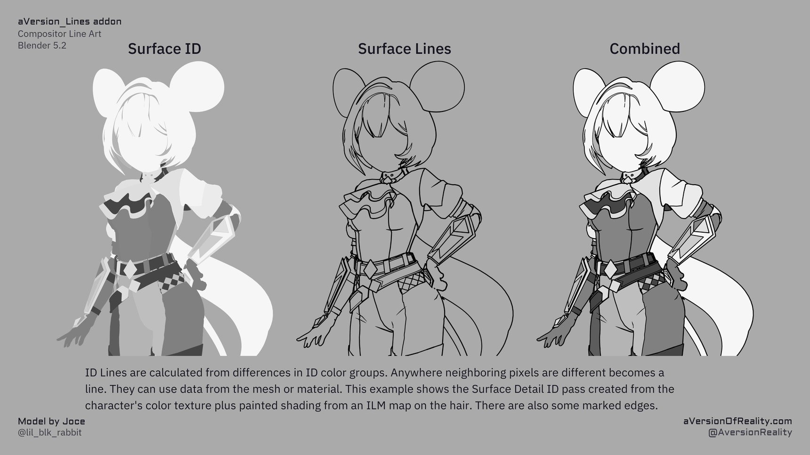
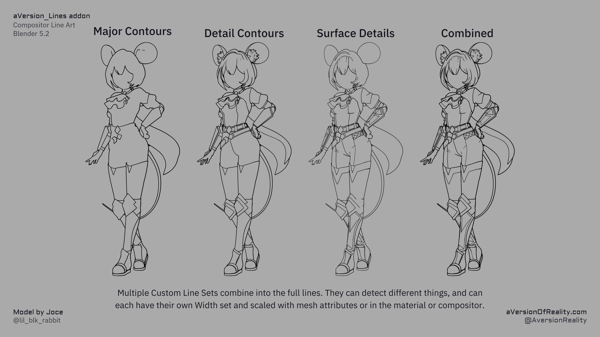
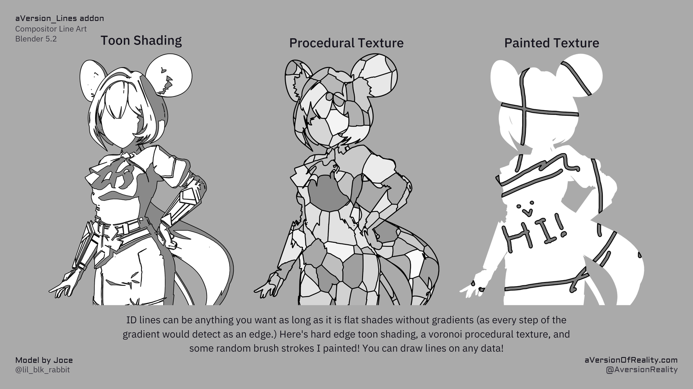

Object & Custom IDs
Video: Custom IDs (17:24) · Closed boundaries (21:31) · Combining and mixing IDs (23:36)
Depth and normal detection only go so far. Object IDs and Custom IDs let you draw lines wherever you define a region. Use them for any areas where you always want a line. This works for creating lines between different surfaces, and also detail lines on the same surface. ID lines give the best results and should be used for the majority of your lines. Use them to separate different parts of a character's outfit, or for sharp edges on a hardsurface mesh, or even for seams on clothing. And you can use the advanced line set options to mix additional Normal and Depth lines into custom IDs to catch those sorts of areas while sharing the ID line set's width. See Line Types for more info.
How IDs work
Video: Closed boundaries (21:31)
IDs are regions with a shared value. Lines are detected where those values are different. So you define the line by putting different values on either side of it. If you set every face of a mesh to have a different ID value, you'd get lines between every face. If you set half the mesh to have one value and the other half another, you'd get a line down the middle of the mesh, etc. But if you have a gradient, every pixel in it will detect as a line because there are differences between each neighboring pixel (so there must not be any gradients). What these values actually are makes no difference as long as they are flat values. The point is simply to identify different areas by them having different values. See How It Works.
IDs can be authored in many ways. You can manually create them with Vertex Paint Mode set on Face selection (to avoid gradients which will be caused by Vertex Selection.) Or in Geoemtry Nodes with Face Data. Or paint them on a texture (set brush falloff to constant). Or in the material even with procedural textures or shading as long as the result is flat values. These can be forced by Ramping or Quantizing (Greater Than math node, Color Ramp on Constant, Or Map Range on Stepped are some methods.) This addon has its own scripts to author IDs based on various mesh data like marked edges of various types, material boundaries, etc. See Authoring Tools.
The big limitation of IDs is that they cannot support a floating, disconnected edge/line by definiton. Since they must be solid regions, every line must connect to another one, or to a mesh boundary. This must be planned for when marking them on a mesh. If you have a situation that does need a free floating line tip, then your choices are to extend and connect the line and then scale that area to 0 thickness to hide it (which can be unreliable at different camera angles), or use the Marked Edges system, which is a more robust version of that (but costs more attributes, AOV passe, and computation.)
If you are using thick lines anyway, you can also work around the limitation by having multiple different region boundaries right next to each other. This will cause overdetection of lines and force a minimum thickness. But that doesn't matter if you were going to have them at least that thick anyway.

Combining IDs
Video: Combining and mixing IDs (23:36)
The Geo_Data and Shader_Data groups both have Combine with… inputs. When one is above 0, its value is hashed into the current ID, letting you merge multiple ID sources into a single line set. So you can define part of an ID on the mesh and part in the shader, and combine them.
The combining is done using the White Noise procedural texture. White Noise is deterministic based on the inputted coordinates. A face/pixel at the same location gets the same value, and every location gets a different value. This lets you combine up to 4 IDs by using them as the vector XYZ and W inputs. 2D white noise uses only X and Y, 3D uses XYZ, and 4D adds the W. If you wanted to combine more than 4, chain the white noises. The Geo_Data and Shader_Data groups already have inputs setup for this combining, but if you needed to do more advanced combines you can easily setup the nodes outside the group and use the ID Mix inputs to replace them, or even edit the group and move the Store Attributes or AOVs outside.
Partial mixes can create gradients
If mixing ID groups based on a mask, make sure it doesn't have a gradient. And remember that the mask itself is going to implicitly define a new region boundary.
Object IDs
Every object gets a unique random ID, so lines appear wherever different objects meet (or meet the background). This gives you silhouette-like outer lines. The Object ID line set is not inherently different from the Custom IDs except that the object ID is already loaded into it.
The Treat Islands as Objects option (Geo_Data) extends this: each connected mesh island becomes its own ID, so a single object's separate parts get boundary lines between them.
The OBJ ID channel does a second job
Unlike the Custom IDs, the OBJ ID channel is also read by the Jump Flood Expansion to decide whether two pixels are on the same surface. Where the IDs match, the expansion treats them as one surface and skips depth sorting between them. Where they differ, it lets depth decide which line wins. That is what stops a curved surface from sorting against itself, and it is why colored lines and overlapping lines resolve correctly.
This makes the channel sensitive to what kind of data you put in it:
- Mesh-based data is safe. Object IDs, islands, material boundaries, face attributes — anything that changes only where there is a real geometry boundary. Combining these into the OBJ ID is fine and often useful.
- Shader-based or texture-based data is not. Toon shading bands, procedural textures, painted textures, or anything that varies across a single surface. These make neighbouring pixels on the same surface read as different surfaces, which switches depth sorting on where it should be off.
Symptom: chunks missing from a line pass
If you combine texture or shader data into the OBJ ID, you can lose whole sections of otherwise-working lines. The expansion rejects pixels it thinks are occluded, so a seed cannot travel through, and the gap can appear somewhere other than where the data is varying.
If lines are disappearing in patches, check whether anything non-mesh-based is combined into the OBJ ID. Put that data in a Custom ID instead.
Quantizing the data does not fix this. Any variation within a surface is enough, no matter how coarse the steps.
Putting everything in the OBJ ID
Because Combine with OBJ ID accepts any ID source, you can fold your ID 1, 2 and 3 data into the OBJ ID channel and drive all of your lines from it. That is a valid approach, and it means every combined region also participates in surface sorting.
If you do that, the object's own ID is no longer separately useful for lines — but you can write it into a Custom ID channel instead via Mix Custom 1/2/3 in Shader_Data, so nothing is lost.
The same caution applies: only combine data that corresponds to real geometry boundaries. This is a manual arrangement for now; a fuller separation of line regions from surface sorting is planned for a future version.
Custom IDs
Video: Custom IDs (17:24)
Three custom ID passes let you draw lines on regions you define. There are two places to author them, and you can combine both.

Each set can detect something different and carry its own width, and they add together into the final lines.
From mesh attributes (Geometry Nodes)
Author Face data where each region has a distinct value, and point a Custom ID input at that attribute name. The Authoring Tools can generate these for you.
Face data only
IDs can't use gradients, and vertex data gets interpolated into a gradient across each face. Use Face data stored in Face or Face Corner attributes so a hard difference only exists between neighboring faces. More explanation in Line Types.
From the shader
Feed a Custom ID from anything in the material, such as a texture, a procedural mask, or toon bands. Use ramps or steps to snap values into flat regions so there are no gradients to overdetect.

Hard edge toon shading, a voronoi procedural texture, and some brush strokes painted by hand. Any of it works as long as the shades are flat.
Advanced Line Set Options
Each ID line set has two extra controls that change how it interacts with the others. Both live in the Advanced Line Set Options sub-panel. See The Addon Panel for the exact fields.
Priority
Where two line sets both detect the same pixel, only one of them can decide its width. By default the thicker line wins. That is usually the correct behavior, but it can cause problems when a detail that should be small exists in multiple line sets. For example, if a fine seam on clothing was included in a Custom ID group set to a thin size, but is also detected by thicker Normal lines from some view angles. In some situations it is enough to use different scale within the same line set for different sizes, but this can break at different camera angles and is a hassle.
The line set with the higher priority value wins. The actual values don't matter. You could use 1, 2, 3, etc or 100, 200, 300.
Priority only matters where sets overlap. If your line sets never detect the same pixels, it has no effect. It also has no effect on line Expansion. It won't stop a thick line from expanding over a thin one adjacent to it.
Including Depth and Normals in an ID line set
ID lines can only follow boundaries you have defined as regions. Some things are awkward to author that way, such as a fold that only shows at certain angles, or two parts overlapping in a way that depends on the pose. Those are cases Depth and Normal detection handle well.
Include in Line Set adds Depth and/or Normal detection into an ID line set. The result belongs to that line set: it takes that set's width, scale, and priority, rather than the global Depth or Normal line settings. This is completely separate from the Depth and Normal line sets themselves, which continue to work independently.
Use it to fill gaps an ID can't reach, while keeping the line weight consistent with the rest of that set.
Each channel of a line set (its own ID edge, Depth, and Normal) has a role:
- Off: ignore that channel.
- Include: add it to the line set. Lines appear where the ID or that channel detects.
- Mask: restrict the line set to where that channel also detects. Lines appear only where both agree.
Include widens what the set catches; Mask narrows it. Setting several channels to Mask narrows it further, since the line then only survives where all of them detect. Mask is the one to reach for when an ID boundary catches too much and you want to keep only the part that is also a real depth or normal feature.
Each line set can carry its own Depth and Normal thresholds instead of the global ones (see below). Either way they follow Threshold Scaling Mode in the same way.
Which threshold it uses
Each of those Depth and Normal channels has a dropdown next to its role, for where it gets its threshold:
- Varying Threshold (default): use the main Depth or Normal line set's threshold, including its Threshold Range and, for Depth, Grazing Correction. Because that value comes from Geometry Nodes and the material, it can vary across the mesh. You can paint it, drive it, or vary it per material, and this line set follows all of that.
- Uniform Threshold: use the single value set here instead. One number for the whole mesh. It can't be painted or driven without going into the nodes yourself.
Varying is usually what you want, since it inherits all the per-mesh control you have already set up on the main passes. Uniform is there for when you want a line set to detect at a different sensitivity than the main pass everywhere, with no per-mesh variation.
The Uniform value greys out when Varying is selected, because nothing reads it then.
Watch out for one thing: if you set a channel to Varying and the matching Depth or Normal line set is also switched on, you are detecting the same thing twice with the same threshold, so the two will mostly overlap. Scale that line set to 0 if you only want it inside your ID sets.
Depth and Normal as line sets
Depth and Normal appear in Include in Include in Line Set. They get the same combine stage the IDs have, which lets you go the other way: instead of folding Depth into an ID, you can mask Depth by an ID.
They differ from the ID sets in two ways:
First, there's a dropdown for which ID they combine with. An ID line set has its own ID and doesn't need to pick one; Depth and Normal have no ID of their own, so you choose. The ID is taken before that line set's own combine stage, so whatever roles you've set on Custom ID 1 don't affect what Depth sees when it masks by Custom ID 1.
Second, only the other channel has a threshold. The Depth line set's own threshold is the main Depth Threshold up in the Thresholds panel. So the Depth set shows a Normal threshold, and the Normal set shows a Depth threshold. You can still chooes a Uniform Threshold for the other channel.
The obvious use is masking. Depth lines everywhere are usually too many; Depth masked by an ID gives you depth detection only in the region you designated. That's the same trick as masking an ID by Depth, but as part of the Depth Line Set instead, allowing more options.
Both default to Off for everything except their own channel, so they behave exactly as before until you change something.
A common example where this system is useful is the chin of a character. If you mark the face and neck as separate IDs, it will work fine from front angles where the boundary isn't visible. But from lower angles, you'll see the boundary marked with the line instead. If you use only the Depth or Normal lines, they can be unreliable from different angles unless you paint detailed Threshold groups for them, and you may even need different thresholds for different camera directions to look correct. But if you have that ID and mask it by Depth (or vice versa), you'll only get lines when both are true. You can use a much lower depth threshold to ensure you pick up the difference between the chin and neck without overdetecting.
The Tools:
The add-on's Authoring Tools generate ID attributes for you:
- Create Custom Line ID: assign region IDs by object, material, island, or marked boundaries.
- Assign New ID to Selection: paint IDs onto selected faces, area by area.
See Authoring Tools.
Next: Marked Edges · Distance Scaling